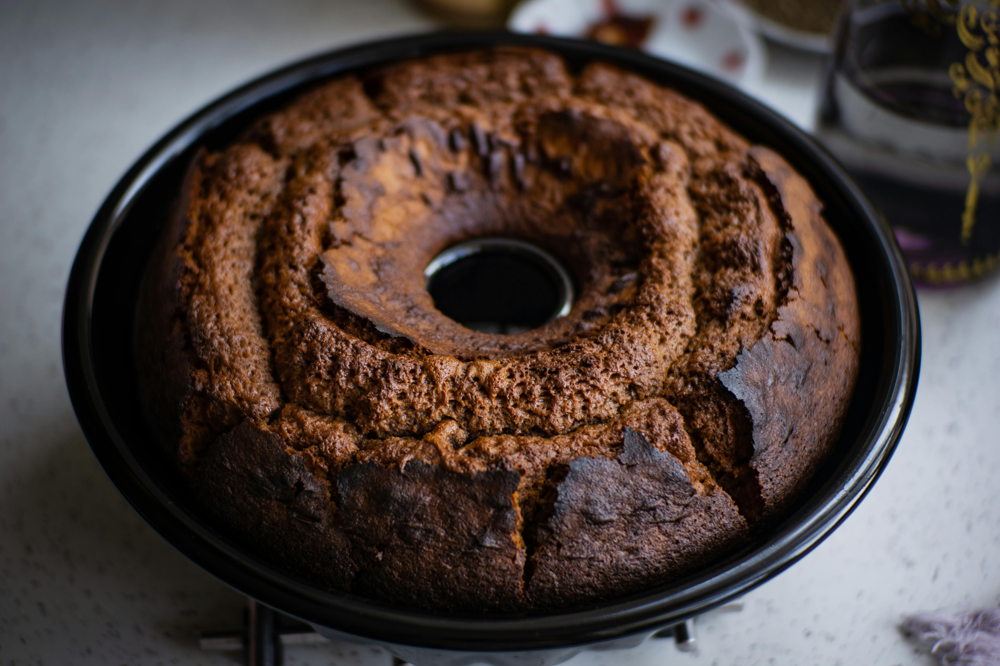

Çikolatalı Kek Tarifi

İçindekiler:
- 3 Yumurta
- 1 Su Bardağı Toz Şeker
- 1 Su Bardağı Süt
- 1 Su Bardağı Ayçiçek Yağı
- 2 Su Bardağı Un
- 3 Yemek Kaşığı Kakao
- 1 Paket Kabartma Tozu
- 1 Paket Vanilin
- 100g Bitter Çikolata (eritilmiş)
Yapılışı:
- Yumurta ve şekeri bir kaba koyup köpürene kadar çırpın.
- Süt ve yağı ekleyerek karıştırmaya devam edin.
- Un, kakao, kabartma tozu ve vanilini eleyerek karışıma ekleyin ve iyice karıştırın.
- Eritilmiş çikolatayı ekleyip tüm malzemeyi homojen bir karışım elde edene kadar karıştırın.
- Hazırladığınız karışımı yağlanmış kek kalıbına dökün.
- 180°C'de önceden ısıtılmış fırında yaklaşık 40 dakika pişirin.
- Fırından aldıktan sonra soğumaya bırakıp dilimleyerek servis edin.
Geri Dön
 Tatlı Keşif
Tatlı Keşif

tatlıdüşkünü (15 Kasım 2024 12:30):
Harika bir çikolatalı kek! Çikolata oranı tam yerinde.
sweetslover_22 (14 Kasım 2024 18:45):
Kek gerçekten çok yumuşak ve lezzetliydi. Kesinlikle denemelisiniz!
cakelover44 (13 Kasım 2024 09:20):
Çikolata sevenler için mükemmel! Yapımı da çok kolay.
sugaryum (12 Kasım 2024 14:50):
Gerçekten çok lezzetli bir kek oldu, tam istediğim gibi oldu. Tarif için teşekkürler!